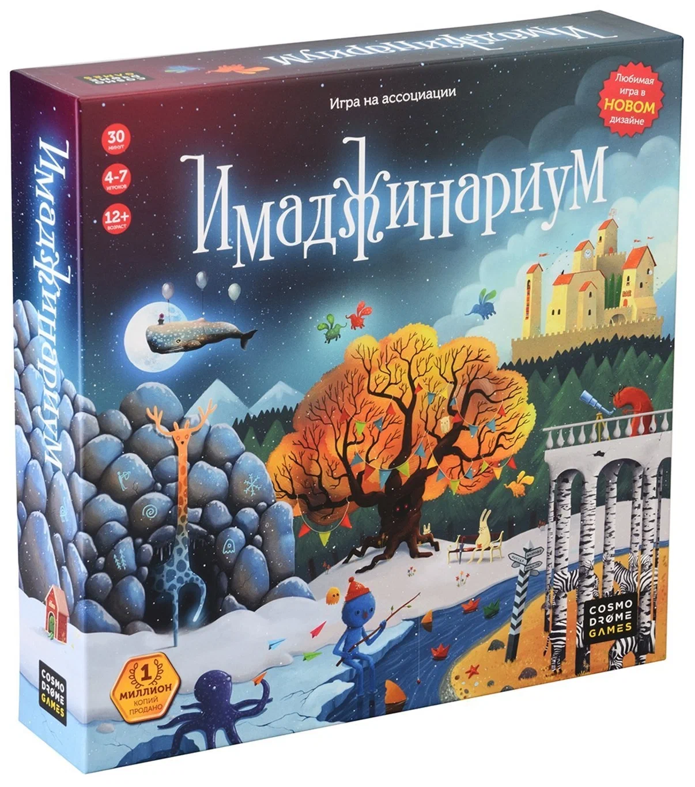

Настольная игра "Имаджинариум"
{kind=link}

Характеристики
- Возраст
- от 12 лет
- Количество игроков
- 4-7
- Время партии
- 30-60 минут
- Тип игры
- ассоциации
- для вечеринок
- семейная
- Тематика
- Новый Год
- Комплектация
- игровое поле
- правила игры
- 7 фишек слонов
- 98 карт ассоциаций
- 49 жетона голосований
- Материал
- картон
- пластик
Подробное описание товара
"Имаджинариум" - культовая игра про ассоциации, с необычными иллюстрациями и захватывающим процессом игры. Постоянный хит продаж уже 10 лет подряд!**О чём настолка?** В коробке 98 иллюстраций, на которых может быть изображено всё, что угодно: фантастическое и реальное, живое и неодушевленное, весёлое и грустное. Только от вашего воображения зависит, что вы увидите на картинке.**Как играть?** Всем раздают карты, каждый по очереди становится ведущим. Он загадывает слово или фразу, а остальные ищут среди своих картинок подобные. Все карты в игре не похожи друг на друга - на одну ассоциацию игроки кладут совершенно разные изображения.**Для чего игра?** Чтобы отдохнуть, повеселиться или лучше узнать людей. Подойдёт не только для игры с близкими и друзьями, но и с новыми знакомыми.**Для кого?** Настольная игра понравится детям и взрослым старше 12 лет - всем, кто любит творческий подход. Это классический "Имаджинариум", а есть ещё выпуски "Детство", "Добро" и "Союзмультфильм".
© Все права защищены